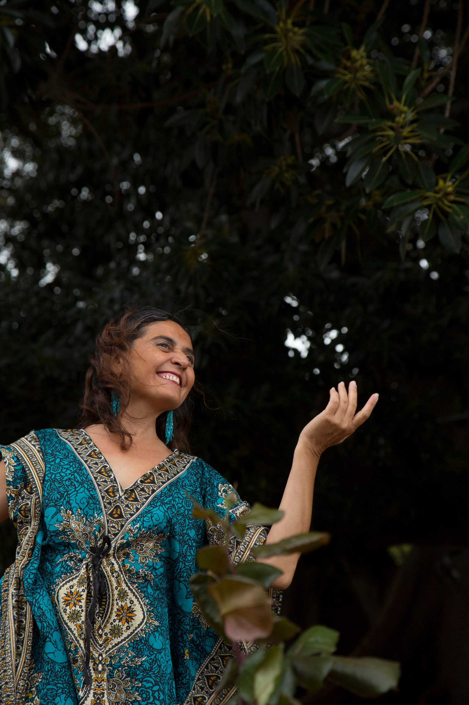
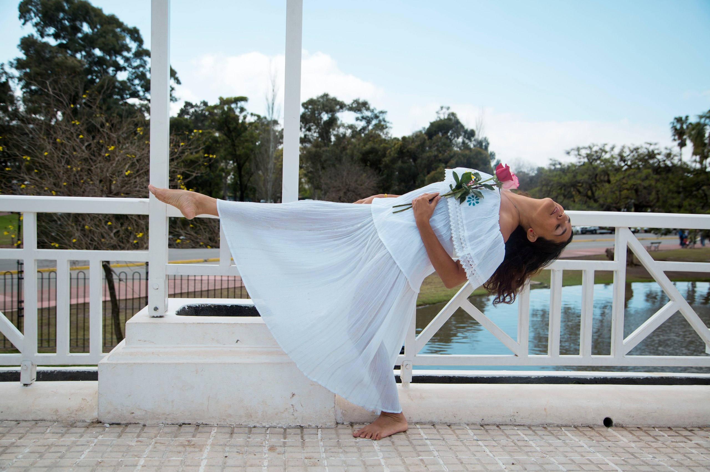

Soy Carla Silvana Calcaterra.
Mi nombre del espíritu es Ion As.
Unir ambos nombres —el que me fue dado y el que recordé— es unir tierra y cielo, memoria y misión. Son frecuencia. Y desde esa frecuencia hoy me presento.
Soy guardiana de la nueva vibración del Sagrado Femenino, dedicada a despertar las memorias de la Nueva Tierra y de esta nueva humanidad que ya está emergiendo.
No me define el pasado, sino la conciencia que hoy lo integra. Porto la frecuencia de todo lo vivido en esta vida y de lo recordado de otras. Las experiencias fueron iniciaciones; las memorias, activaciones. Pero ahora el foco no está en mi historia, sino en el espacio que se abre para que tú recuerdes la tuya.

Mi servicio no es decirte quién eres.
Es acompañarte a abrir la puerta para que lo descubras por ti mismo.
Guiada por la sabiduría que despertó en mí —memorias antiguas, presencia de seres que acompañan y una misión crística al servicio del amor— sostengo espacios donde el despertar se vuelve natural, orgánico y profundamente humano.
Creo en la tribu.
Creo en el ritmo natural.
Creo en el arte como portal.
He co-creado procesos de transformación y reconexión donde la danza, la voz y el movimiento consciente activan memorias dormidas. Cuando me recordé, comprendí que el arte no era expresión: era código. Era puente. Era medicina.
La alegría y la inocencia son llaves del corazón.
La vulnerabilidad es fuerza.
El cuerpo es templo.

He peregrinado por nodos de la Tierra sembrando la frecuencia de la Rosa y los cristales conectores de un nuevo cuerpo consciente, genuino y amoroso. Acompaño a otros seres en el despertar de sus dones, para que puedan acceder al campo cuántico de las infinitas posibilidades y abrir la puerta del nuevo mundo que ya late dentro de ellos.
He facilitado laboratorios vivos de experiencia, donde lo que he integrado en mí se convierte en guía para otros. Volver a sentir la magia de vivir en armonía con la naturaleza, la música, la danza y sobre todo el canto sagrado.
El canto como vibración.
El canto como lenguaje original.
El canto como recuerdo.
Acompaño a almas sensibles que sienten el llamado del nuevo tiempo, sosteniendo espacios cuidados y nutridos donde pueden moverse energías de amor verdadero y elegir un camino más libre.
Hoy sostengo portales como Rosas Alquímicas, donde cada ser puede recordar quién es, integrar su femenino consciente, reconciliar su masculino sagrado y activar su cuerpo como templo multidimensional.
Mi camino es la alquimia en la nueva era cuántica.
Mi lenguaje es la Rosa a través de la voz y la danza.
Mi servicio es recordar juntos.
Si sientes el llamado, el espacio ya está abierto.